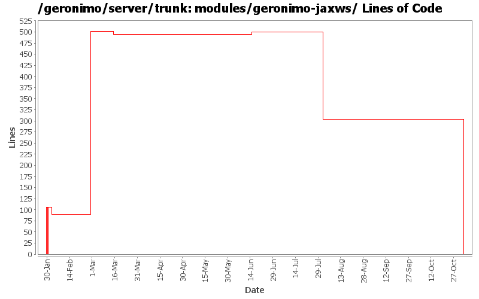

[root]/modules/geronimo-jaxws
 src
(0 files, 0 lines)
src
(0 files, 0 lines)
 main
(0 files, 0 lines)
main
(0 files, 0 lines)
 java
(0 files, 0 lines)
java
(0 files, 0 lines)
 org
(0 files, 0 lines)
org
(0 files, 0 lines)
 apache
(0 files, 0 lines)
apache
(0 files, 0 lines)
 geronimo
(0 files, 0 lines)
geronimo
(0 files, 0 lines)
 jaxws
(0 files, 0 lines)
jaxws
(0 files, 0 lines)
 annotations
(0 files, 0 lines)
annotations
(0 files, 0 lines)
 client
(0 files, 0 lines)
client
(0 files, 0 lines)

| Author | Changes | Lines of Code | Lines per Change |
|---|---|---|---|
| Totals | 24 (100.0%) | 748 (100.0%) | 31.1 |
| jdillon | 2 (8.3%) | 412 (55.1%) | 206.0 |
| dims | 12 (50.0%) | 304 (40.6%) | 25.3 |
| gawor | 1 (4.2%) | 9 (1.2%) | 9.0 |
| djencks | 1 (4.2%) | 8 (1.1%) | 8.0 |
| hogstrom | 2 (8.3%) | 5 (0.7%) | 2.5 |
| prasad | 4 (16.7%) | 4 (0.5%) | 1.0 |
| akulshreshtha | 1 (4.2%) | 4 (0.5%) | 4.0 |
| jgenender | 1 (4.2%) | 2 (0.3%) | 2.0 |
GERONIMO-3565. Modules distributed amongst framework/modules and plugins
0 lines of code changed in 3 files:
* updated copyright date to 2007
4 lines of code changed in 1 file:
Changed trunk to 2.1-SNAPSHOT
1 lines of code changed in 1 file:
updated dependencies after axis2-jaxws-api refactoring
9 lines of code changed in 1 file:
More dependency pruning
4 lines of code changed in 1 file:
Updating from stax-api to geronimo-stax-api_1.0_spec to correct incorrect method signatures
4 lines of code changed in 1 file:
GERONIMO-2908 - Deploy JAX-WS services without webservices.xml
2 lines of code changed in 1 file:
Add legal files
412 lines of code changed in 2 files:
simplify dependencies. A runtime module should not depend on a builder module. This works for me, let me know if there are problems
8 lines of code changed in 1 file:
Fix eol style
90 lines of code changed in 1 file:
Clean up time :) get rid of m1 repo for axis2
2 lines of code changed in 1 file:
Many Many Thanks to DJencks! - Got this working finally. All the tests in webservices-testsuite pass
106 lines of code changed in 3 files:
Roll back changes - Need to get builds working again!
0 lines of code changed in 3 files:
oops! add missing repo
17 lines of code changed in 1 file:
move the common jaxws code into a separate maven module, next step would be to fix axis2 modules to reuse the common code
89 lines of code changed in 3 files: